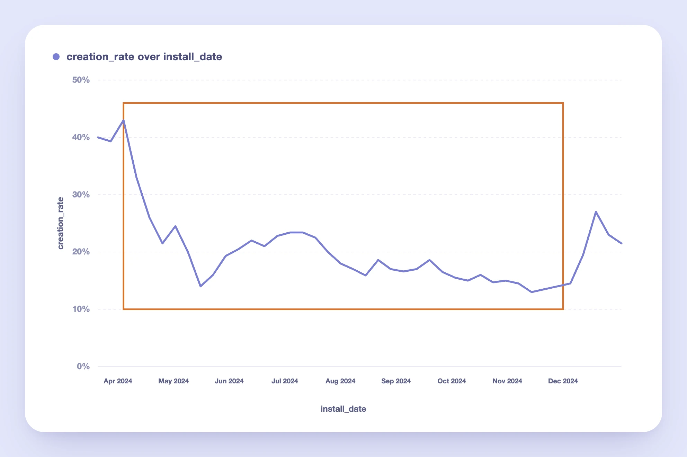
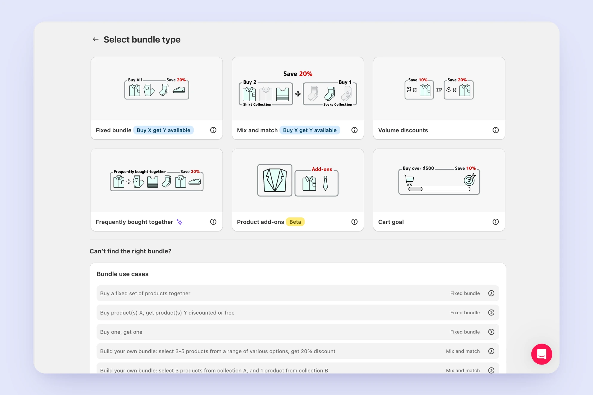
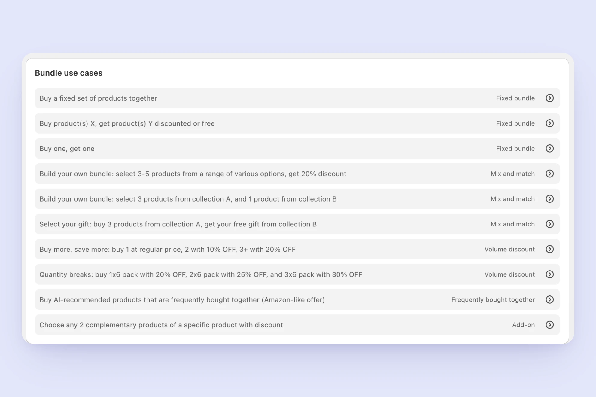
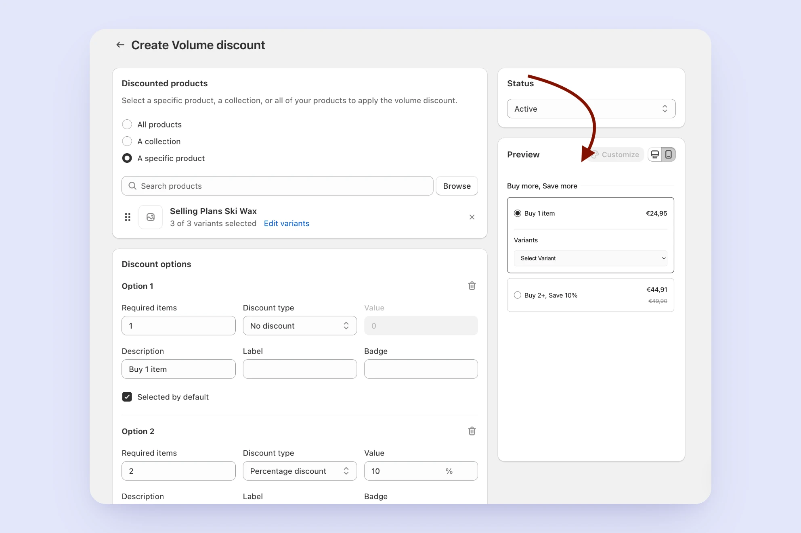
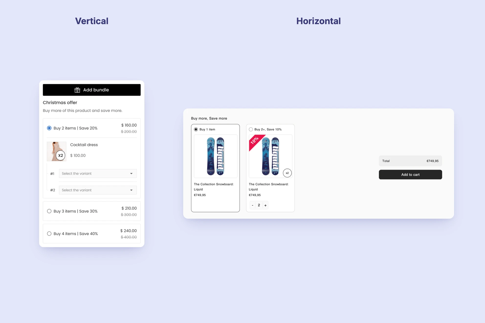

Fixing a Feature People Kept Giving Up On
A high-traffic feature in a Shopify bundling app was losing users, they'd start setting it up, then abandon it partway through. I researched why through a full audit of the user journey, screen recordings of real usage, and a look at how competitors solved the same problem. The issue wasn't just what the feature looked like. It also came down to a technical limit on how safely we could change it without breaking things for people already using it. I designed a template system that solved both sides of the problem, more than doubling completion rates and cutting trial cancellations along with it.

The app's most-used bundle type
I work on a top-ranked bundling app on the Shopify App Store, offering six bundle types to meet different merchant needs. Volume Discount — one of these six types — is designed for merchants who sell wholesale or want to encourage larger purchases: it lets them set discounts that increase with quantity (e.g., "Buy 3, save 10%; Buy 5, save 20%") on one or more products. It was consistently our most-used bundle type.
A steady decline, with no obvious cause
Starting in mid-April 2024, Volume Discount's creation rate — the percentage of merchants who installed the app and went on to create at least one Volume Discount — began a steady decline. From a peak of ~43%, it dropped to as low as ~12% by mid-November, falling behind bundle types it had previously outperformed.
No single change explained the drop, which meant the problem was systemic rather than a broken step in the flow. My job was to find out why merchants were dropping off, and whether the fix was a UX problem, a technical one, or both.

How I approached it
I led the research end to end, from framing the questions to turning findings into a design an engineering team could ship without breaking existing merchants' bundles.
- Audited the merchant journey and reviewed screen recordings of real usage
- Benchmarked competitors across comparable bundling apps
- Gathered input from customer-facing teams on recurring merchant requests
- Synthesized findings with the PM and engineers into design requirements
- Designed and validated the templating system before rollout
1. Auditing the current journey
I mapped out the entire path a merchant takes to create a Volume Discount, and found friction at nearly every step:
Getting discovered. Volume Discount ranked 13th in App Store search results for "Volume Discount," and didn't appear on the first page at all for "Quantity Breaks" — a term many merchants search for instead.
Choosing the type. On the "Select bundle type" page, Volume Discount was the only one of the three main types without a "Buy X get Y available" badge — the visual element that drew the most attention on the page. Despite this, it had a higher creation rate than the two badged types.

Volume Discount was also underrepresented further down the page: fewer use-case examples than other types, positioned lower in the list.

Creating the discount. The creation flow had three specific gaps:
- No product preview image shown while building the offer
- No option to set a discount for a range of quantities (e.g., "5–10 items")
- A custom product-selection experience — instead of Shopify's native selection modal — that made it hard to select multiple products or variants

Seeing the result. This is where I found the most important insight — a live preview only appeared after a merchant had already selected products and set a discount. Merchants couldn't see what their Volume Discount would actually look like until it was nearly done.
Storefront design. Both the horizontal and vertical widget layouts felt unfinished — inconsistent spacing, no product imagery in some states, and a generic visual style that didn't reflect the polish merchants would expect on their own storefront.

Two problems, one system
Replace abstract bundle types with a template system
ChallengeMerchants couldn't tell what a bundle type would look like to their customers until after building it — the low visibility was driving drop-off.
DecisionDesigned a set of pre-built, visually previewed templates so merchants could recognize the right bundle type before committing to setup.
Keep existing bundles compatible by default
ChallengeAny redesign risked breaking bundles merchants already had live in their stores.
DecisionMapped every existing configuration onto the new template system automatically, so no merchant needed to rebuild a bundle that already worked.
Creation rate recovered — and kept more trials
"The redesign didn't just fix a UX problem — it removed a technical blocker that had been limiting the feature all along."
Trial cancellation also dropped 4%, suggesting the fix reached beyond the immediate feature.